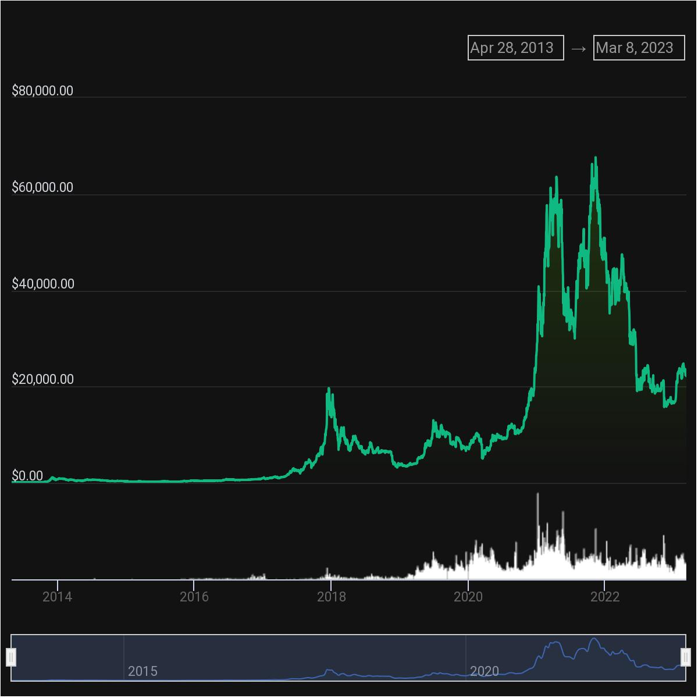
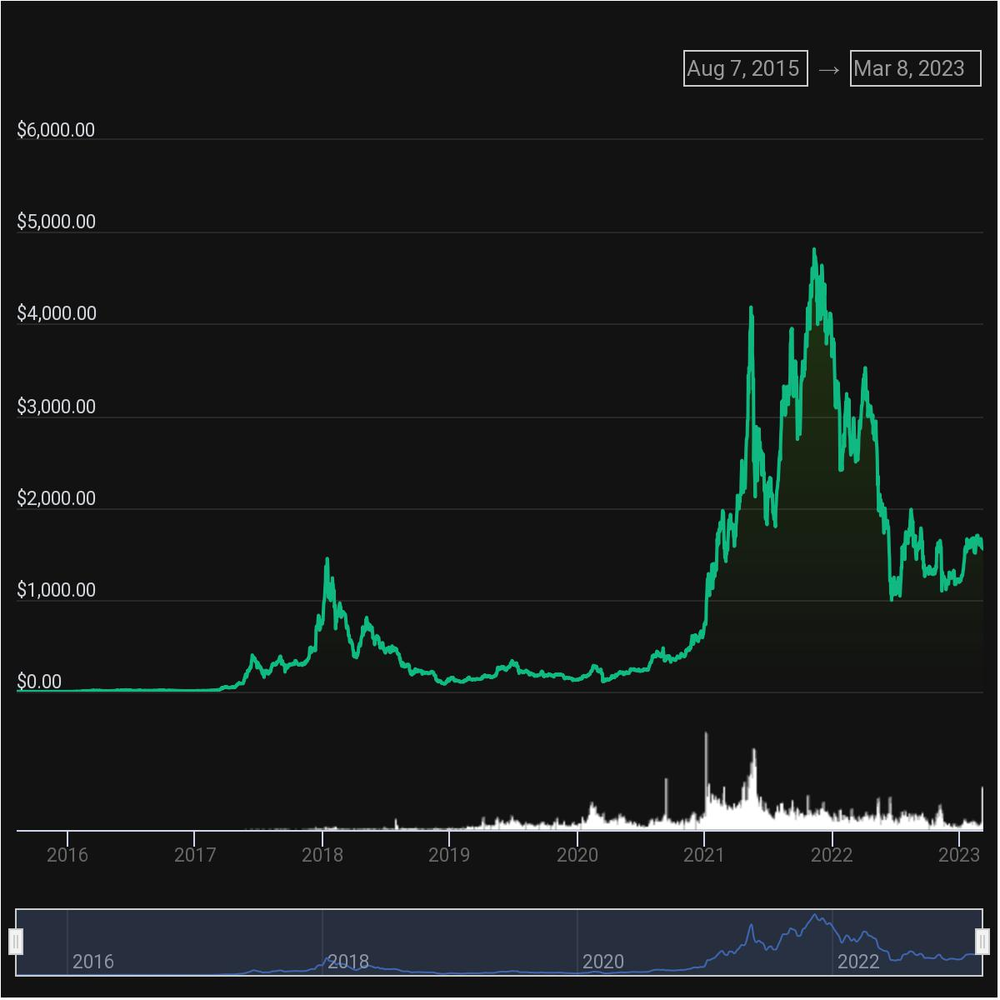
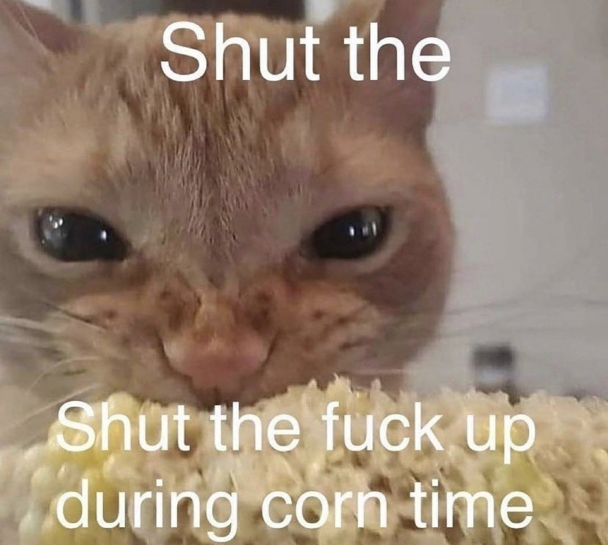

Cryptocurrency
Adalah mata uang digital yang menggunakan kriptografi untuk mengamankan dan memverifikasi transaksi. Crypto ga dikendaliin sama pemerintah atau Bank Central karena menggunakan blockchain yang memungkinkan transaksi dilakukan secara terdesentralisasi (tidak terpusat) dan trackable.
Cryptocurrency, Bitcoin, Ethereum, Proof of Work
Cryptocurrency as an investment
Fungsi dan kegunaan crypto sebenernya banyak dan macem2, sekreatif orang2 mau dibikin apa dan gimana, tapi disini gue mau bahas crypto sebagai aset investasi yang beresiko tinggi, sampai sini seharusnya kalian sadar dan paham kalo gue udah berusaha ngomong ke kalian buat ga investasiin duit kalian di crypto.
Sekarang kita liat grafik/chart harga dari crypto #1 Bitcoin $BTC

dari bitcoin chart kita liat pada 2013 harga bitcoin sekitar $100 (1.5jt/koin) dan terus mengalami fluktuatif harga sampai akhirnya tertinggi tahun 2021 Quarter 4 dengan harga $60k (900jt/koin) dan sekarang harga turun menjadi $22k (340jt/koin)
Lalu sekarang kita liat cryptocurrency #2 berdasarkan marketcapnya, Ethereum $ETH

dari ethereum chart kita bisa liat pada tahun 2015 harga per koin hanya $2 (30ribu rupiah) dan kemudian sama mengalami fluktuatif harga sampai akhirnya tertinggi pada tahun 2021 dengan harga $4,500 (70jt/koin) dan sekarang harga turun menjadi $1,500 (23jt/koin)
Dari kedua chart tersebut bisa diliat kalo emang naik-turun harga crypto itu fluktuatif, tapi dibalik itu semua ada istilah
high risk high return.
Sesuatu yang mempunyai resiko tinggi, pasti ngasih feedback yang lebih juga, kaya kang welder bawah laut, dia ngelas tiang atau memperbaiki badan kapal dibawah laut dengan resiko kecelakaan kerja tinggi, tapi bayarannya juga. Kerja di tambang juga resikonya gede, tapi bayarannya juga gede.

Nah sampai sini gue juga masih tidak menyarankan buat investasiin duit kalian ke crypto.
Investing in crypto can be a risky endeavor, as the market can be volatile and unpredictable.
Risk Management
Strategi Managemen adalah untuk mengurangi pontensi losses dan memaksimalkan return
- Diversifikasi, adalah salah satu strategi manegemen yang bisa dilakukan dengan melebarkan aset investasi secara luas di berbagai sektor untuk mengurangi overall risk, jadi nih misal crypto lagi sueee banget, aset investasi lain masih bisa nutup, misal harga properti naik, harga niche jam tangan juga naik, harga saham (?) naik. Ada istilah
Don’t put all your eggs in one basket.
-
Jangan bego, apalagi fomo (fear of missing out), kalo mau invest-in duit ke high-risk investment minimal ngerti, bisa menganalisa market, ngerti trend, ngerti team dan historis nya gimana, dan ngerti juga keadaan keuangan sendiri plus set finansial goalnya gimana.
-
Risk Tolerance, realistis aja, ngerti dan paham batasan alokasi dana buat aset portofolionya
-
Stop-loss, ini yang agak susah, jadi kita harus set dilevel harga berapa kita akan jual aset yang kita punya, jangan ditahan2 kalo udah minus banyak mah, tar yang ada makin turun, ini pake fitur biasanya disetiap aplikasi nyedian fitur stop-loss, dipake jangan diliat doang! Misal nih kita investasi duit di Solana ($SOL) 20jt, turun nih jadi 15jt, trus emosi kita ga terima masih gamau jual-rugi dan terus percaya kalo bakal naik, yeuuu yang ada malah makin turun. Baca lagi deh poin nomor 2 sama 3.
-
Timing, nih berhubungan nih ama poin2 sebelumnya. Ngerti market trend sama news event, karena dua hal tersebut bisa mempengaruhi naik-turunnya harga.
-
Regular Monitoring, terakhir, memantau investasi crypto dan menyesuaikan strategi, rebalancing portofolio, take profit kalo emang dirasa cukup (jangan maruk), portofolio udah naik 400% ditahan2 ga dijual :( sad
-
Bonus, re-investing
In summary, investing in crypto can be a high-risk, high-reward proposition. However, by implementing effective risk management strategies, investors can minimize potential losses and increase their chances of generating returns
